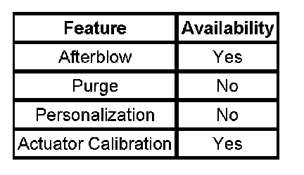

Air Temperature
AIR TEMPERATURE DESCRIPTION AND OPERATION
The air temperature controls are divided into 5 areas:
- HVAC Control Components
- Heating and A/C Operation
- Auxiliary Heating and A/C Operation
- Engine Coolant
- A/C Cycle
HVAC Control Components
HVAC Control Module
The HVAC control module is a GMLAN device that interfaces between the operator and the HVAC system to maintain desired air temperature and distribution settings. The battery positive voltage circuit provides power that the control module uses for keep alive memory (KAM). If the battery positive voltage circuit loses power, all HVAC DTCs and settings will be erased from KAM. The body control module (BCM), which is the vehicle mode master, provides a device on signal. The HVAC control module provides blower, air delivery mode, air temperature settings and input signals to auxiliary HVAC control module. The HVAC system assembly receives power from battery input with ignition 3 Voltage circuit as a backup.

The HVAC control module supports the features.
Auxiliary HVAC Control Module
The auxiliary HVAC control module provides blower, air delivery mode and air temperature settings. When the auxiliary position is selected, from the HVAC control module, inputs from this control assembly will be processed by the auxiliary HVAC control module. If equipped with rear seat audio (RSA) the auxiliary HVAC system will support GMLAN.
Front Temperature Actuators
The front temperature actuators are 5-wire bi-directional electric motor that incorporates a feedback potentiometer. Ignition 3 relay voltage, low reference, control, 5-Volt reference and position signal circuits enable the actuator to operate. The control circuit uses either, 0, 2.5 or 5-Volt signal to command the actuator movement. When the actuator is at rest, the control circuit value is 2.5 volts. A 0 or 5-Volt control signal commands the actuator movement in opposite directions. When the actuator shaft rotates, the potentiometer adjustable contact changes the door position with a signal ranging between 0-5 volts.
The HVAC control module uses a range of 0-255 counts to index the actuator position. The door position signal voltage is converted to a 0-255 count range. When the module sets a commanded, or targeted, value, the control signal is changed to either 0 or 5 volts depending upon the direction that the actuator needs to rotate to reach the commanded value. As the actuator shaft rotates the changing position signal is sent to the module. Once the position signal and the commanded value are the same, the module changes the control signal to 2.5 volts.
Auxiliary Temperature Actuator
The auxiliary temperature actuator is a 5-wire bi-directional electric motor that incorporates a feedback potentiometer. Ignition 3 relay voltage, low reference, control, 5-Volt reference and position signal circuits enable the actuator to operate. The control circuit uses either, 0, 2.5 or 5-Volt signal to command the actuator movement. When the actuator is at rest, the control circuit value is 2.5 volts. A 0 or 5-Volt control signal commands the actuator movement in opposite directions. When the actuator shaft rotates, the potentiometer adjustable contact changes the door position with a signal ranging between 0-5 volts.
The HVAC control module uses a range of 0-255 counts to index the actuator position. The door position signal voltage is converted to a 0-255 count range. When the module sets a commanded, or targeted, value, the control signal is changed to either 0 or 5 volts depending upon the direction that the actuator needs to rotate to reach the commanded value. As the actuator shaft rotates the changing position signal is sent to the module. Once the position signal and the commanded value are the same, the module changes the control signal to 2.5 volts.
A/C Refrigerant Pressure Sensor
The A/C refrigerant pressure sensor is a 3-wire piezoelectric pressure transducer. A 5-Volt reference, low reference, and signal circuits enable the sensor to operate. The A/C pressure signal can be between 0-5 volts. When the A/C refrigerant pressure is low, the signal value is near 0 volts. When the A/C refrigerant pressure is high, the signal value is near 5 volts. The PCM converts the voltage signal to a pressure value.
The A/C refrigerant pressure sensor protects the A/C system from operating when an excessively high pressure condition exists. The PCM disables the compressor clutch if the A/C pressure is more than 3234 kPa. The clutch will be enabled after the pressure decreases to less than 1931 kPa.
Heating and A/C Operation
The purpose of the heating and A/C system is to provide heated and cooled air to the interior of the vehicle. The A/C system will also remove humidity from the interior and reduce windshield fogging. Regardless of the temperature setting, the following can affect the rate that the HVAC system can achieve the desired temperature:
- Recirculation actuator setting
- Difference between inside and desired temperature
- Difference between ambient and desired temperature
- Blower motor speed setting
- Mode setting
- Auxiliary HVAC settings
The manual HVAC system is a dual temperature zone system. There are 2 separate air temperature levers. Moving the air temperature levers to the upward position diverts most of the airflow through the heater core, which increases the outlet air temperature. Moving the air temperature levers to the most downward position diverts most of the airflow around the heater core, which decreases the outlet air temperature. The right air temperature actuator controls the duct air temperature flowing through the center console to the second row seating passengers. The air temperature offset can be as much as 16.7°C (30°F).
Pressing the A/C button enables the HVAC control module to request A/C compressor engagement and turn ON the A/C button LED. The HVAC control module sends a GMLAN message to the Powertrain Control Module (PCM) for A/C compressor engagement. The PCM will provide a ground for the A/C compressor relay enabling it to close its internal contacts to send battery voltage to the A/C compressor clutch coil. The A/C compressor diode will prevent a voltage spike, resulting from the collapse of the magnetic field of the coil, from entering the vehicle electrical system when the compressor is disengaged. Defrost and Defog mode selections will request A/C operation but not turn ON the A/C LED.
The following conditions must be met in order for the A/C compressor clutch to turn ON:
- Ambient air temperature above 2°C.
- A/C low pressure switch signal circuit is grounded.
- A/C refrigerant pressure sensor parameter is less than 3234 kPa.
- A/C compressor temperature switch contacts are closed.
- PCM receives an A/C request from the HVAC control module.
- Engine coolant temperature (ECT) is less than 124°C.
- The engine RPM is less than 5800 RPM.
The sensor information is used by the PCM to determine the following:
- The A/C high side pressure
- An A/C system load on the engine
- An excessive A/C high side pressure
- The heat load at the A/C condenser
The A/C compressor has an A/C compressor temperature switch. This switch protects the compressor from over heating. The switch interrupts power to the compressor clutch coil. When the compressor core temperature rises above 124°C (255°F) the switch opens, disabling the compressor clutch coil. When the temperature lowers to 120°C (248°F) the switch closes, enabling the compressor clutch coil. This switch is not a serviceable part, it is integral to the A/C compressor.
Once engaged, the compressor clutch will be disengaged for the following conditions:
- Ambient air temperature is less than 1°C (35°F).
- A/C compressor temperature switch contacts are open.
- Throttle position is 100 percent.
- The A/C low pressure switch is open.
- A/C high side pressure is more than 1931 kPa.
- A/C low side pressure is less than 151 kPa (22 psi).
- Engine coolant temperature (ECT) is more than 124°C.
- Engine speed is more than 5,800 RPM.
- Transmission shift
- PCM detects excessive torque load.
- PCM detects insufficient idle quality.
- PCM detects a hard launch condition.
Auxiliary Heating and A/C Operation
The auxiliary air temperature switch is a rotary knob switch. Turning the air temperature switch to the warmest position diverts most of the airflow through the heater core, which increases the outlet air temperature. Turning the air temperature switch to the coolest position diverts most of the airflow around the heater core, which decreases the outlet air temperature.
Engine Coolant
Engine coolant is the essential element of the heating system. The thermostat controls the normal engine operating coolant temperature. The thermostat also creates a restriction for the cooling system that promotes a positive coolant flow and helps prevent cavitation.
Coolant enters the heater core through the inlet heater hose, in a pressurized state. The heater core is located inside the HVAC module. The ambient air drawn through the HVAC module absorbs the heat of the coolant flowing through the heater core. Heated air is distributed to the passenger compartment, through the HVAC module, for passenger comfort. Opening or closing the air temperature door controls the amount of heat delivered to the passenger compartment. The coolant exits the heater core through the return heater hose and recirculated back through the engine cooling system.
A/C Cycle
Refrigerant is the key element in an air conditioning system. R-134a is presently the only EPA approved refrigerant for automotive use. R-134a is an very low temperature gas that can transfer the undesirable heat and moisture from the passenger compartment to the outside air.
The A/C compressor is belt driven and operates when the magnetic clutch is engaged. The compressor builds pressure on the vapor refrigerant. Compressing the refrigerant also adds heat to the refrigerant. The refrigerant is discharged from the compressor, through the discharge hose, and forced to flow to the condenser and then through the balance of the A/C system. The A/C system is mechanically protected with the use of a high pressure relief valve. If the A/C refrigerant pressure sensor were to fail or if the refrigerant system becomes restricted and refrigerant pressure continued to rise, the high pressure relief will pop open and release refrigerant from the system.
Compressed refrigerant enters the condenser in a high temperature, high pressure vapor state. As the refrigerant flows through the condenser, the heat of the refrigerant is transferred to the ambient air passing through the condenser. Cooling the refrigerant causes the refrigerant to condense and change from a vapor to a liquid state.
The condenser is located in front of the radiator for maximum heat transfer. The condenser is made of aluminum tubing and aluminum cooling fins, which allows rapid heat transfer for the refrigerant. The semi-cooled liquid refrigerant exits the condenser and flows through the liquid line, to the orifice tube.
The orifice tube is located in the liquid line between the condenser and the evaporator. The orifice tube is the dividing point for the high and the low pressure sides of the A/C system. As the refrigerant passes through the orifice tube, the pressure on the refrigerant is lowered. Due to the pressure differential on the liquid refrigerant, the refrigerant will begin to vaporize at the orifice tube. The orifice tube also meters the amount of liquid refrigerant that can flow into the evaporator.
Refrigerant exiting the orifice tube flows into the evaporator core in a low pressure, liquid state. Ambient air is drawn through the HVAC module and passes through the evaporator core. Warm and moist air will cause the liquid refrigerant boil inside of the evaporator core. The boiling refrigerant absorbs heat from the ambient air and draws moisture onto the evaporator. The refrigerant exits the evaporator through the suction line and back to the compressor, in a vapor state, and completing the A/C cycle of heat removal. At the compressor, the refrigerant is compressed again and the cycle of heat removal is repeated.
The conditioned air is distributed through the HVAC module for passenger comfort. The heat and moisture removed from the passenger compartment will also change form, or condense, and is discharged from the HVAC module as water.
A/C Cycle with Auxiliary
The auxiliary A/C system operates from the vehicles primary A/C system. The front or primary A/C system must be ON to allow the rear A/C system to function.
Refrigerant is the key element in an air conditioning system. R-134a is presently the only EPA approved refrigerant for automotive use. R-134a is an very low temperature gas that can transfer the undesirable heat and moisture from the passenger compartment to the outside air.
The A/C system used on this vehicle is a non cycling system. Non cycling A/C systems use a high pressure switch to protect the A/C system from excessive pressure. The high pressure switch will OPEN the electrical signal, to the compressor clutch, in the event that the refrigerant pressure becomes excessive. After the high and low side of the A/C system pressure equalize, the high pressure switch will CLOSE. Closing the high pressure switch will complete the electrical circuit to the compressor clutch. The A/C system is also mechanically protected with the use of a high pressure relief valve. If the high pressure switch were to fail or if the refrigerant system becomes restricted and refrigerant pressure continued to rise, the high pressure relief will pop open and release refrigerant from the system.
The A/C compressor is belt driven and operates when the magnetic clutch is engaged. The compressor builds pressure on the vapor refrigerant. Compressing the refrigerant also adds heat to the refrigerant. The refrigerant is discharged from the compressor, through the discharge hose, and forced to flow to the condenser and then through the balance of the A/C system.
Compressed refrigerant enters the condenser in a high temperature, high pressure vapor state. As the refrigerant flows through the condenser, the heat of the refrigerant is transferred to the ambient air passing through the condenser. Cooling the refrigerant causes the refrigerant to condense and change from a vapor to a liquid state.
The condenser is located in front of the radiator for maximum heat transfer. The condenser is made of aluminum tubing and aluminum cooling fins, which allows rapid heat transfer for the refrigerant. The semi-cooled liquid refrigerant exits the condenser and flows through the liquid line. The liquid line flow is split and the liquid refrigerant flows to both the front or primary A/C system, and to the liquid line for the rear A/C system.
The liquid refrigerant, flowing to the rear A/C system, flows into the rear thermal expansion value (TXV). The rear TXV is located at the rear evaporator inlet. The TXV is the dividing point for the high and the low pressure sides of the rear A/C system. As the refrigerant passes through the TXV, the pressure on the refrigerant is lowered. Due to the pressure differential on the liquid refrigerant, the refrigerant will begin to boil at the expansion device. The TXV also meters the amount of liquid refrigerant that can flow into the evaporator.
Refrigerant exiting the TXV flows into the evaporator core in a low pressure, liquid state. Ambient air is drawn through the rear A/C module and passes through the evaporator core. Warm and moist air will cause the liquid refrigerant boil inside of the evaporator core. The boiling refrigerant absorbs heat from the ambient air and draws moisture onto the evaporator. The refrigerant exits the evaporator through the suction line and back to the primary A/C systems suction line. Refrigerant in the primary A/C system suction line flows back to the compressor, in a vapor state, and completes the A/C cycle of heat removal. At the compressor, the refrigerant is compressed again and the cycle of heat removal is repeated.
The conditioned air is distributed through the rear A/C module for passenger comfort. The heat and moisture removed from the rear passenger compartment will also change form, or condense, and is discharged from the rear A/C module as water.